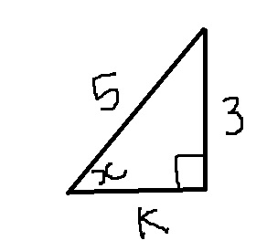

Enter your name
Grade 11 Test 1
Trig in 3-D
Question 1

Which one of the following are the correct values of x and k:
x = 0,04 and k = 3
x = 36,87 and k = 4
x = 4 and k = 36,87
Result[]
Question 2
Write a in terms of y and b
Which one of the following is correct:
a = b x tan(a)
a = b x sin(y)
a = b x tan(y)
Result[]
Question 3
Write b in terms on angle N and side M
Which one of the following is correct:
b = tan(90 - y) x m
b = sin(y) x m
b = sin(90 - y) x m
Result[]
Question 4
Write B and A
1
in terms of p
Which one of the following is correct:
B = p - y and A
1
= 180 - p
B = y - p and A
1
= 180 - p
B = p - y and A
1
= p + 180
Result[]
Question 5
Write NC in terms of x and AB
Which one of the following is correct:
BN.Cos(x)
AB.Cos(x)
Sin(x).AB
Result[]
Question 6
Write BC
2
in terms of x
Which one of the following is correct:
2.AB.Cos
2
(x)
2.A
2
B
2
.Cos
2
(x)
2(AB.Cos(x))
2
Result[]
Question 7
Which of the following are the correct values of d and b[round of to two decimal places]:
d = 4 and b = 53,13
d = 5 and b = 53,13
d = 3 and b = 53,13
Result[]
Question 8
Which one of the following are the correct values of p , x and y[Round off to two decimal places]:
p = 2 ; x = 9 ; y = 12,62
p = 5 ; x = 12 ; y = 22,62
p = 3 ; x = 6 ; y = 40,62
Result[]
Question 9
Which of the following is the correct value of p[Round off to two decimal places]:
p = 6,09
p = 7,11
p = 11,09
Result[]
Question 10
Which one of the following is the correct value of k[Round off to two decimal places]:
k = 18,61
k = 9,61
k = 92,37
Result[]
Click here to submit all your work
Your marks will be displayed here